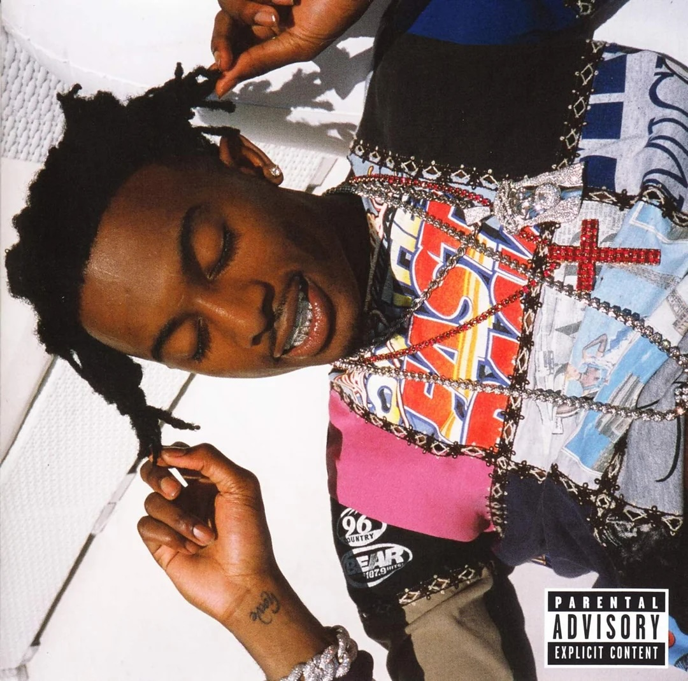

REVIEWS

Playboi Carti - MUSIC
Playboi Carti’s MUSIC, a frenetic 30-track punk-rap assault, redefining trap with abrasive beats, raw chaos, and 228.7 million Spotify streams.

Playboi Carti - Whole Lotta Red
Playboi Carti’s audacious sonic plunge—a frenetic, abrasive mix of punk-rap aggression and minimalist beats that redefines trap with raw, unapologetic chaos.

Playboi Carti - DIE LIT
Playboi Carti’s hypnotic, carefree vibe—a lean, bouncy fusion of minimalist beats and ad-libbed flows that turns trap into a surreal, party-fueled dreamscape.

Playboi Carti - Playboi Carti
Playboi Carti’s self-titled debut is a lean, hypnotic banger—a stripped-down surge of catchy hooks, ad-libbed energy, and woozy beats that ignites a new wave of trap.

Tyler, The Creator - Call Me if You Get Lost
Tyler, the Creator’s swaggering travelogue—a slick, confident mashup of sharp lyricism, jazzy production, and globe-trotting flair that showcases his boundless artistry.

NBA Youngboy - TOP
NBA YoungBoy’s raw, emotional ascent—a gritty barrage of pained melodies, relentless flows, and street-born intensity that captures his unyielding hustle and heart.

Lil Uzi Vert - ETERNAL ATAKE
Lil Uzi Vert’s cosmic odyssey—a futuristic, high-octane blend of melodic trap and otherworldly vibes that rockets through a neon-lit universe of flex and feeling.

Kendrick Lamar - To Pimp a Butterfly
Kendrick Lamar’s profound, genre-defying opus—a dense, jazzy tapestry of searing lyrics and social commentary that wrestles with identity, power, and Black resilience.

A$AP ROCKY - A.L.L.A
At.Long.Last.A$AP is a hazy, ambitious trip—a slick fusion of psychedelic beats, introspective rhymes, and Harlem swagger that drifts through a cloud of style and substance.

Freddie Gibbs & Madlib - PIÑATA
Freddie Gibbs and Madlib’s gritty, soulful collision—a hard-hitting blend of razor-sharp rhymes and dusty, cinematic beats that cracks open the raw essence of street life.

SZA - SOS
SZA’s sultry, soul-baring voyage—a lush mix of R&B vulnerability, sharp lyricism, and eclectic production that navigates love, loss, and self-discovery with raw elegance.

Kanye West - Graduation
Kanye West’s triumphant, stadium-sized evolution—a bold blend of uplifting anthems, polished beats, and introspective bars that marks his ascent to rap superstardom.

DRAKE - TAKE CARE
Drake’s moody, expansive confessional—a smooth, atmospheric fusion of introspective rhymes and lush production that dives deep into fame, love, and late-night melancholy.

Yeat - UP 2 MË
Yeat’s relentless, futuristic surge—a glitchy, bass-heavy storm of auto-tuned flows and hypnotic beats that carves out a bold new lane in trap’s evolution.

Ken Carson - A GREAT CHAOS
Ken Carson’s unhinged, electric rampage—a distorted, high-energy clash of aggressive flows and blown-out beats that thrives in its raw, rebellious anarchy.

Kanye - My Beautiful Dark Twisted Fantasy
Kanye West’s sprawling, cinematic triumph—a lavish fusion of bold production, intricate rhymes, and unfiltered ambition that redefines hip-hop’s boundaries.

Kendrick Lamar - good kid, m.A.A.d city
Kendrick Lamar’s gripping, cinematic tale—a vivid blend of razor-sharp rhymes and soulful beats that chronicles Compton’s chaos and a young man’s redemption.

Drake - Nothing Was The Same
Drake’s sleek, introspective pinnacle—a polished mix of brooding beats and confident bars that traces his rise from Toronto dreamer to rap royalty.

Travis Scott - Astroworld
This is a thrilling journey—Travis Scott blends trap beats with psychedelic layers, crafting a vivid, Houston-inspired soundscape.

Eminem - The Slim Shady LP
A darkly comedic and lyrically ferocious album that propelled Eminem to stardom, showcasing his unparalleled ability to weave personal frustrations into biting satire with shockingly clever wordplay.

Eminem - The Marshall Mathers LP
This album is Eminem’s raw, unfiltered peak—a razor-sharp blend of dark humor, visceral storytelling, and relentless flows that cuts deep into the psyche of a troubled genius.

Tyler, the Creator - Flower Boy
Flower Boy is Tyler, the Creator’s blooming evolution—a lush, introspective gem that swaps brashness for soulful melodies and vibrant production, unveiling a tender, colorful core.

Lil Wayne - The Carter III
Lil Wayne’s crowning triumph—a bold, syrup-soaked whirlwind of clever wordplay, infectious hooks, and innovative beats that cements his reign as a rap icon.

Kanye West - The College Dropout
Kanye West’s soulful, groundbreaking debut—a witty, heartfelt blend of chipmunk-sampled beats and relatable rhymes that flips the script on hip-hop’s playbook.

Kanye West - Late Registration
Kanye West’s lush, orchestral leap—a masterful mix of witty lyricism, cinematic production, and soul-drenched beats that elevates his vision to new heights.

Kanye West - 808s & Heartbreak
Kanye West’s haunting, minimalist reinvention—a stark fusion of icy beats, auto-tuned wails, and raw emotion that reshapes heartbreak into a futuristic lament.

Travis Scott - RODEO
Travis Scott’s wild, cinematic debut—a gritty, intoxicating blend of booming trap, hazy melodies, and chaotic energy that gallops through a dark, hedonistic wonderland.

Frank Ocean - Blonde
Frank Ocean’s ethereal, introspective odyssey—a delicate weave of minimalist beats, poetic lyrics, and raw vulnerability that drifts through love, loss, and fleeting moments.

Future - Monster
Future’s grimy, relentless street sermon—a dark, syrupy onslaught of menacing beats and cold-hearted bars that solidifies his reign as trap’s dungeon master.

Pusha T - DAYTONA
Pusha T’s razor-sharp, compact triumph—a lean, menacing blend of coke-rap precision and Kanye’s gritty beats that slices through with unrelenting swagger.

Tyler, the Creator - IGOR
Tyler, the Creator’s warped, emotional symphony—a kaleidoscopic mix of funky beats, distorted vocals, and raw heartbreak that reimagines love as a wild, colorful fever dream.

Earl Sweatshirt - Some Rap Songs
Earl Sweatshirt’s lo-fi, introspective descent—a murky, concise tangle of fragmented beats and dense rhymes that excavates grief, growth, and raw humanity.

Kanye West - Yeezus
Kanye West’s abrasive, revolutionary jolt—a stark, industrial clash of jagged beats and defiant rhymes that strips hip-hop to its raw, rebellious core.

Billie Eilish - When We All Fall Asleep, Where Do We Go?
Billie Eilish’s eerie, whispery haunt—a dark, minimalist blend of pop-trap beats and unsettling lyrics that tiptoes through teenage nightmares.

Young Thug - Barter 6
Young Thug’s slimy, slurred breakthrough—a woozy, off-kilter mix of melodic flows and eccentric beats that redefines Atlanta trap with fearless weirdness.

Kendrick Lamar - Damn
Kendrick Lamar’s visceral, soul-searching banger—a taut, dynamic blend of fierce rhymes and varied beats that wrestles with faith, fame, and fierce self-reflection.

Nicki Minaj - The Pinkprint
Nicki Minaj’s bold, versatile showcase—a slick mix of fierce bars, pop anthems, and raw vulnerability that balances her rap dominance with personal revelation.

Travis Scott - Utopia
Travis Scott’s sprawling, dystopian epic—a chaotic, immersive blend of booming trap, experimental textures, and cinematic vibes that builds a dark, futuristic playground.

Kanye West - The Life of Pablo
Kanye West’s messy, eclectic gospel—a frenetic patchwork of soulful samples, jagged beats, and candid bars that revels in its chaotic brilliance.

J Cole - Forest Hills Drive
J. Cole’s introspective homecoming—a warm, narrative-driven blend of smooth beats and honest rhymes that traces his journey from Fayetteville to fame.